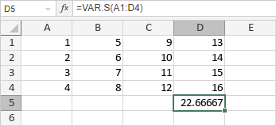

VAR.S funkcija
Funkcija VAR.S je jedna od statističkih funkcija. Koristi se za procenu varijanse na osnovu uzorka (ignoriše logičke vrednosti i tekst u uzorku).
Sintaksa
VAR.S(number1, [number2], ...)
Funkcija VAR.S ima sledeće argumente:
| Argument | Opis |
|---|---|
| number1/2/n | Do 255 numeričkih vrednosti za koje želite da izračunate varijansu. |
Napomene
Prazne ćelije, logičke vrednosti, tekst ili vrednosti greške dati kao deo niza se ignorišu. Ako se daju direktno funkciji, tekstualne reprezentacije brojeva i logičke vrednosti tumače se kao brojevi.
Kako primeniti funkciju VAR.S.
Primeri
Slika ispod prikazuje rezultat koji vraća funkcija VAR.S.
